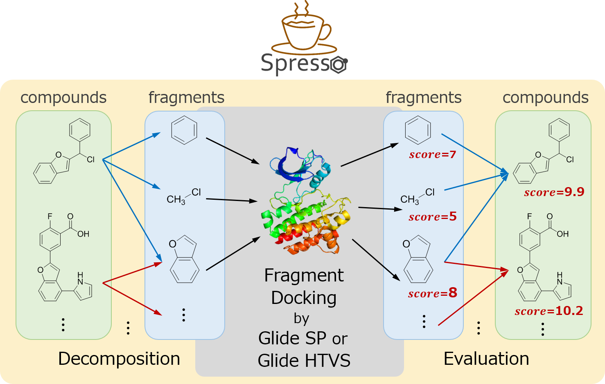
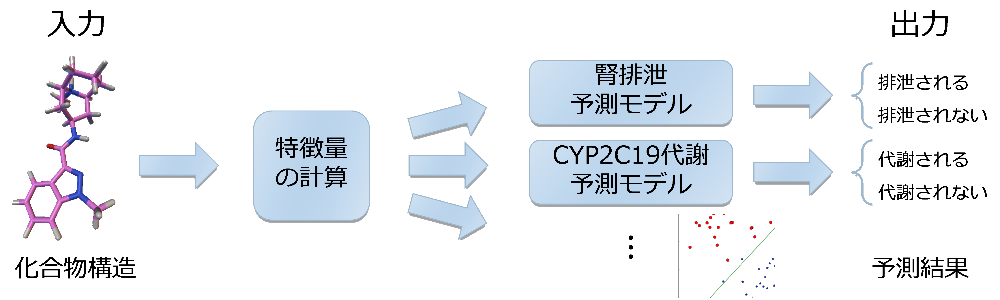
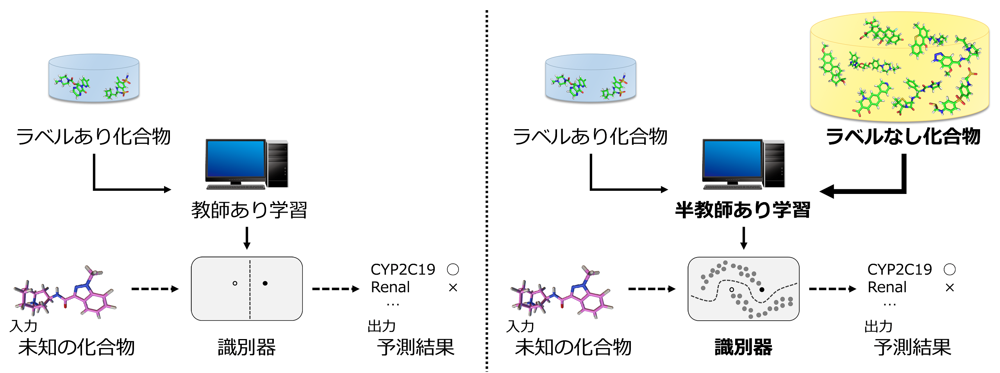

開発したツール
タンパク質の3次元構造に基づいたバーチャルスクリーニングにおいて、ドッキング計算を行う前の化合物のプレスクリーニングを行います。
フラグメント分割に基づく高速な化合物プレスクリーニング手法の開発 (2014/04-)
タンパク質の3次元構造を用いたバーチャルスクリーニング (Structure-based virtual screening, SBVS)の計算量を抑えるため、化合物群をあらかじめ削減すること（プレスクリーニング）が多く行われています。これについて、タンパク質の3次元構造に基づきつつも高速に化合物を評価するプレスクリーニング手法Spressoを開発しています。

- Keisuke Yanagisawa, Shunta Komine, Shogo D. Suzuki, Masahito Ohue, Takashi Ishida, Yutaka Akiyama: “Spresso: An ultrafast compound pre-screening method based on compound decomposition”, Bioinformatics. (Epub ahead of print)
[open access]
- Keisuke Yanagisawa, Shunta Komine, Shogo D. Suzuki, Masahito Ohue, Takashi Ishida, Yutaka Akiyama: “ESPRESSO: An ultrafast compound pre-screening method based on compound decomposition”, The 27th International Conference on Genome Informatics (GIW 2016), 7 pages, 2016/10
半教師付き学習を用いた薬物クリアランス経路予測 (2013/04-2015/08)
薬物化合物の分子量 (MW)、分配係数 (logD)、血漿中タンパク質非結合率 (fup)などを計算し、これらの値を利用してヒト体内のどのような代謝・排泄経路（クリアランス経路）を通過するかを予測します。

この予測問題は「ラベル付け（クリアランス実験）のコストが非常に高く、ラベル付けされていない化合物構造は大量に存在している」という性質を持っています。
したがって、一般によく用いられる教師付き学習ではなく、ラベル付けされていないデータも利用することの出来る半教師付き学習が予測に適していると考えられます。

- Keisuke Yanagisawa, Takashi Ishida, Yutaka Akiyama: “Drug clearance pathway prediction based on semi-supervised learning”, IPSJ Transactions on Bioinformatics, 8: 21-27, 2015/08
[open access]